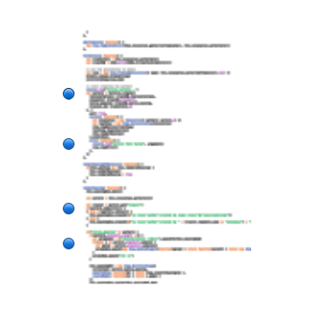
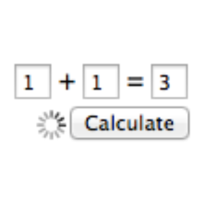

space-age-miracle-tools.js
Narciso (nj) Jaramillo · @notwebsafe · github.com/njx
Icons from The Noun Project · Rocket by Antonis Makriyannis · Angel by Luis Prado · Hammer by John Caserta
Theseus

Joel Brandt · joelbrandt.org
Debugging async code is fun!
Something's wrong!

Guess at the problem

Add breakpoints, logs

Reload
Fixed yet?
Instabug
Peter Flynn · github.com/peterflynn
Live JS Editing
Function replacement
function myFunc() {
console.log('old message');
}function myFunc() {
var func, funcDef = __funcReplacements['myFunc'];
if (funcDef) {
func = eval(funcDef);
} else {
func = function () {
console.log('old message');
}
}
return func.apply(this, arguments);
}__funcReplacements['myFunc'] =
'(function () { console.log(\'new message\'); })';Adding items to existing closures
var myModule = (function () {
var someVar = 1;
var myFunc = function () { console.log(someVar); };
return { myFunc: myFunc };
}());...user makes edits...
var myModule = (function () {
var someVar = 1;
var myFunc = function () { console.log(newFunc()); };
var newFunc = function () { return someVar; };
return { myFunc: myFunc };
}());The grotesque hack: "with"
var someObj = {
name: "Some Guy",
age: 21
};
with (someObj) {
console.log("Name: " + name + ", age: " + age);
}Applying the grotesqueness
var myModule = (function () {
__scopes['myModule'] = {};
with (__scopes['myModule']) {
var someVar = 1;
var myFunc = function () { /* instrumented version */ };
}
scope.someVar = someVar;
scope.myFunc = myFunc;
return { myFunc: myFunc };
}());with (__scopes['myModule']) {
var newFunc = function () { return someVar; };
}
__scopes['myModule'].newFunc = newFunc;Why, God, Why?
Response
Lee Brimelow · leebrimelow.com

nj · @notwebsafe · github.com/njx